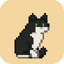

PISI is in your browser
Looking for PISI…
PISI isn't running yet. Start it, then open its Settings → Web pages → Set up browser bridge, and restart your browser.
Pin me first: click the puzzle piece in your toolbar and pin PISI. Everything below lives in that menu, one click away.
1. I play on your pages
I climb onto the text you're reading, pounce on what you select and watch your videos with you. The badge on my icon says what I'm up to: ✓ playing here, zz napping through a focus block, hey guarding this page.
Right-click any page to throw me a toy or shine the laser.
2. I guard your focus
Pick the sites that pull you away. During a focus block, open one and I'll come and sit on it. Drag me off for five minutes (less each time you do it in the same block).
Any other site: open it, then tick Guard my focus here in my menu, or right-click the page and pick PISI, guard this site.
3. I make a bit of a mess
Now and then I knock a word off the end of a line, or dig through a paragraph and send the words flying. Only what you see changes: reload, or Tidy up this page in my menu, and they're back.
I only talk to the PISI app on this computer. It gets the shape of the page (where paragraphs, headings and pictures are) and what's happening there, never the words, never the address. The sites you guard stay in your browser.